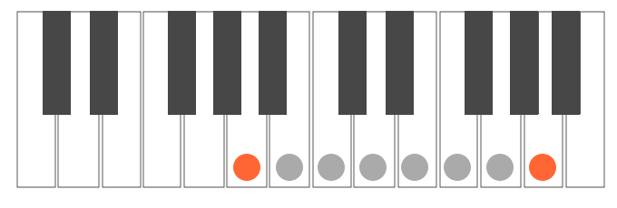

1. 音阶的“中心”？
1. 音阶的“中心”？
上一回介绍了西方音乐中最基本的两种音阶。
“大调音阶”
“小调音阶” 

对比这两者，由7个白键组成这一点是完全相同的，不同之处仅在于它们的起点，或者说以哪个音作为中心。以 Do 为中心就是大调音阶，以 La 为中心就是小调音阶。

但话又说回来，“起点”或“中心”究竟是什么意思呢？音乐是看不见的艺术。既看不见，也摸不着。……所谓的“中心”究竟存在于哪里呢？
2. 中心音
我们是通过什么来感知看不见的音乐结构的呢？简而言之，就是声音的偏向、倾向、不均衡。

这是一个非常容易理解声音“偏向”的例子。使用的音域范围是从 La 到 La。开始的音是 La，每个小乐句的开头也必然是 La，后半段有一连串 La 的连击，结尾的音还是 La。在这段音乐中，La 仿佛就像棒球里的“本垒”一样，乐句即使展开出去，最终也总会回到 La。在这首曲子里，音阶中的7位成员的地位绝非平等，而是呈现出明显偏重于 La 的不均衡结构。在这种时候，乐理上就会说“这首曲子是以 La 为中心创作的”。

在实际的乐曲中可能没有这么单纯直白，但通过各声部的乐句、和弦、节奏等运动的倾向，中心依然会被确立下来。哪个音会成为中心并不是完全客观的，最终也与人类的认知息息相关。即使最初的音不是 La，最高的音不是 La，出现频次最高的音也不是 La，只要通过特定的强调手法，任何音都可以成为中心。 那么反过来想一想：如果完全消除音符之间的偏向，音乐会变成什么样？

这个例子由 7 个音以完全相同的频率、随机的顺序、匀速的节奏出现，让人感受不到任何乐句的聚拢感。如果音符的运动如此缺乏倾向与特征，中心音就无法确立。

而从这种均等且随机的乐句中，我们很难感受到任何音乐上的叙事性。偏向孕育了中心，而中心的存在赋予了音乐清晰的故事性。 在音乐理论中，这个作为核心的音被称为中心音（Tonal Center），或者主音（Tonic）。
中心音 (Tonal Center) : 在乐曲中充当核心基准角色的音。是在乐曲构成音中，相对于其他音起到起点和终点作用的特殊音[1]。 : “中心音”与“主音”几乎是同义词[2]。
这个定义可能略显抽象，这是因为在音乐中建立中心感的方法有非常多种。我们无法简单地将其定义为“曲子最后一个音”或者“响得最多的音”，结果只能给出一个近乎同义反复（Tautology）的定义：“所谓中心音，就是曲子中心的音”🥲 不过随着今后旋律理论与和弦理论的学习，你会逐渐掌握“中心”这个概念，现在暂且先将其理解为这样一种存在即可。 美国作曲家、音乐教育家霍华德·汉森（Howard Hanson）曾对调性中心作过如下论述：
Most melodies have some tonal center, one tone about which the other tones of the melody seem to “revolve.” (中略) The advantage of a tonal center would seem to be the greater clarity which a melody derives from being organized around some central tone. Such organization avoids the sense of confusion and frustration which frequently arises when a melody wanders about without any apparent aim or direction.
大多数旋律都具有某种中心音，旋律中的其他音符似乎都围绕着这个音“旋转”。（中略）拥有中心音的优势在于，当旋律围绕某个核心音组织起来时，能够获得极高的清晰度。这种组织性避免了旋律漫无目的、缺乏方向地游荡时经常带来的困惑与沮丧感。
Hanson, Howard. “Harmonic Materials of Modern Music”(p.56).
刚才那段随机的乐句，正给人一种“四处游荡”的感觉；如果用平时的听觉习惯去听，想必不会觉得那是多么动听享受的乐句。有了中心点，然后远离中心、再回归中心——正因为有了这样的展开起伏，音乐才能成为大众都能听懂并享受其中的艺术。 因此，在绝大多数流行音乐中，旋律、和弦进行、节奏等复合要素都会共同作用，使音的平衡产生偏向，进而确立中心。而这种偏向的方式又会直接影响音乐整体的氛围和印象。所以，即便同样是使用 7 个白键，以 Do 为中心的音阶和以 La 为中心的音阶才会被视为完全不同的存在而加以区分[3]。
调性
当乐曲中的某个音成为中心音并统领其他音时，我们就说这首曲子具有调性（Tonality）。“调性”也是一个定义相对抽象的词，人们常用音的“组织体系”来比喻它。
调性(Tonality) : 中心音与其他音之间形成的组织性关系。指在乐曲中单一音扮演核心角色的状态或属性[4]。
在开头的音频中，La 成了中心人物（Center），其他音则作为“配角”烘托 La。在 12 个音中选拔出了 7 个音，但能够站上“C位”的只有一人。而在别的曲子里，又会选出不同的成员，由另一个人来当 C 位……这感觉是不是特别像大型偶像团体的选拔与站位发布？

看到音符之间的这种等级秩序，理论家们便将其理解为“音符构成了组织”。乐曲拥有其选拔成员（= 音阶的构成音）以及站位阵型（= 中心音的存在）。这种性质，就是调性。 因此，除非像前面的极端例子那样刻意不建立中心，否则曲子的中心往往会自然确立，乐曲也会自动拥有调性。
3. 调性音乐与无调性音乐
拥有调性的音乐被称为调性音乐（Tonal Music）。正如前文所述，除非经过极其刻意的反常规设计，乐曲通常都会自带调性，因此世上的绝大多数音乐都属于调性音乐。而且这绝不仅限于西方音乐。 《笼中鸟》（かごめかごめ）是日本古老的童谣，但它同样具有调性。这首曲子（以上方的演唱版本为例）仅由 Mi、Fa♯、Re、Si 4个音构成，但在这4个成员中，站在“C位”的是 Mi。开始的音、结尾的音、每个句段开头的音，以及出现最频繁的音，全都是 Mi。旋律从 Mi 出发向上或向下离开，最终总会重新回归。这种以 Mi 为核心的组织性音符关系，构成了《笼中鸟》的音乐叙事。

Mi 占据了旋律的大半篇幅，简直就像镜头全被 C 位霸占的 MV 一样。 开头听到的电子音乐与《笼中鸟》在风格流派上可谓相隔十万八千里。但在“以某个单一音为中心”这一根本构造上，两者是完全相通的。具有明确的中心音，拥有调性——这是音乐极其根本和基础的特质。
无调性音乐
与此相反，不具备调性的音乐被称为无调性音乐（Atonal Music）。我们在日常生活中很少听到这类音乐，至少在商业流行榜单中，几乎不可能见到无调性音乐的身影。 不过，通过聆听缺乏中心音的音乐，反而能帮助我们更深刻地理解平时听的音乐中中心的存在。让我们也来稍微感受一下吧！
古典乐领域
能够大量找到无调性音乐的领域，大概当属 20 世纪以后的近现代古典音乐了。正如我们在绪论中所介绍的，当时的作曲家们热衷于探索前所未有的崭新作曲法。在摆脱既有框架的激进化尝试中，他们开辟出了没有调性的音乐天地。
听起来可能会觉得有些诡异或者神秘莫测，造成这种感觉的主要原因就是中心音的缺失。正如汉森前述的引文所言，由于感受不到音乐行进的方向，听众会觉得旋律在漫无目的地游荡。 要欣赏这类音乐，需要换一种不同于以往的心态。比如带着“接下来会冒出什么样的音色呢？”这种期待不可预测性本身的心情去听，说不定会有奇妙的趣味。
电影与游戏配乐
把无调性音乐一概打上“诡异”的标签未免有些不公，但相比于日常音乐，它确实有着强烈的异质感。正是由于这种奇特与神秘的氛围，无调性音乐被广泛运用于恐怖电影、悬疑剧、RPG 游戏的 Boss 战等充满紧迫感的配乐中。
电影《人猿星球》《惊魂记》、日剧《圈套》（TRICK）、动漫《电锯人》等众多知名作品中都有无调性音乐的身影。对于创作这类风格音乐的人来说，20 世纪古典乐开创的技法将大有用武之地。
电子音乐领域
此外，在氛围音乐（Ambient）或噪音音乐（Noise Music）等电子音乐领域，很多时候甚至根本不基于 12 键键盘来构建声音，同样能发现无调性音乐的存在。
(※Merzbow 与 Masonna 的曲目音量非常大，请务必注意音量设置) 打开音乐示例 ↗
面对完全由噪音和机械音构成的音乐，或许会有人觉得“这根本不是音乐！”但这也是一种货真价实的音乐形态。尽管它缺少旋律、和声等古典音乐要素，但这些并不是音乐的绝对充要条件。单纯享受音色本身，也是欣赏音乐的一种方式。 稍微有点扯远了……总之，除去这些特殊的音乐之外，我们日常听到的大多数音乐都是调性音乐。在调性音乐中，正是中心音与配角音之间的相互关系勾勒出了音乐的故事线。 那么接下来，让我们从更具实战性的角度出发，看看流行人声歌曲中中心音是如何与音乐表达相结合的吧！
4. 中心音与音乐终止
用“音的组织关系”、“偏向”、“倾向”这些偏学术的词汇来解释，可能会让人觉得有些深奥。但实际上，调性是非常直观且简单的东西。在听过前一节的无调性音乐后，你一定会觉得它跟流行榜单上的音乐风格截然不同，显得神秘而难以捉摸。即使是没有受过专业音乐训练的普通听众，也会产生同样的感受。这意味着，我们即使不去刻意思考，也能自然分辨出调性音乐与无调性音乐。即便脑海中没有关于调性的理论知识，即便意识上没有关注它，我们的感知层面其实已经在感受调性了。
这绝非什么不可思议的奇迹。没有音乐经验的人，也能听出音乐的欢快或悲伤，听到中东风情的音阶也能立刻联想到中东。我们在降生到这个世界、接触海量音乐的过程中，不知不觉间就已经培养出了记忆、识别和区分音乐的强大能力[5]。 而对于创作者而言，正如熟练驾驭欢快/悲伤的氛围十分重要一样，利用中心音构建音乐故事的技术也是重中之重。下面我们来看看实战乐句创作与中心音之间的联系。
中心音与音乐表现
前文提到中心音是“起到终点作用的音”。更具体地说，在乐句的结尾使用中心音，能够最明确地呈现出“乐句结束了”、“尘埃落定了”、“着陆平稳了”的感觉。无论是旋律线、低音线（Bassline），还是和弦构建，这一原则都普遍适用，是乐曲段落展开与收束中最核心的基础要诀。
着陆在中心的表现
谢谢 A
谢谢 B
这是一首风格简朴的感谢之歌，这里准备了两种不同的结尾方式。版本 A 是旋律与乐器组最终走向中心音收尾；而版本 B 则是最后偏离了中心音结束。 对比试听这两者，能够在结尾给出扎实、稳健、彻底“收束”感的显然是 A。旋律与低音都回归到中心，赋予了音乐安定感，呈现出“展开完毕、圆满收拢”的印象。而版本 B 走向了一个有些突兀的方向，坦白说算不上好的旋律。对于这种直球式的摇滚感谢歌曲，像 A 那样朴实有力地在中心音利落收尾，歌曲的情感才能最直接地传达给听众。 “旋律或低音以中心音结束 = 明确直白地呈现终结感”，这一认知是编曲作曲中极其重要的基础知识。
不着陆在中心的表现
我们再来看另一种模式。
幻影 A
幻影 B
这次是一首带着伤感、悠闲惬意（Chill）风格的曲目，同样制作了两种结尾方式。和刚才一样，A 是最终全员着陆在中心音结束，B 则是最后偏离中心音。试听对比后感觉如何呢？ 从这首歌曲的主题性来看，A 的结尾正是因为着陆得过于四平八稳，反而破坏了那种缥缈与虚幻的氛围美感。相反，B 刻意保持悬空未决的未稳定状态结束，完美烘托出了“消散如烟的幻影”那种怅然若失的揪心感。在这两种方案中，选择 B 显然能打动更多人的心。 因此，乐理中绝不存在“段落末尾必须用中心音结束”这种教条规矩，关键在于：是否走向中心音，构成了创作者能否调动听众心理安定感的精妙博弈。 关于这方面的更多细节，后续在旋律篇与和弦篇中会接连展开详细讲解，这里先在没有乐谱和复杂理论解释的前提下让大家进行了听觉对比。如果此时此刻你凭直觉已经隐约能感受到“《谢谢 A》感觉很直率坦诚”、“《幻影 B》感觉很缥缈凄美”，那非常棒！这说明你已经将流行音乐的常规语汇转化为自身的音感了。 反之，如果耳朵暂时还分不太出这种差异，也不用着急。后续通过系统的理论学习、歌曲分析积累知识，并结合实战作曲经验，你的综合音感会逐步建立起来。用理性的头脑弥补感性的不足，正是学习理论的魅力所在，即使现在还没顿悟，积极地往下阅读即可。
实际案例分析
在实际的热门流行曲旋律中，我们可以找到大量巧妙运用“着陆于中心音还是偏离中心音”的精彩案例。
HoneyWorks – 《可爱对不起》（可愛くてごめん）
打开音乐示例 ↗ 《可爱对不起》副歌的旋律构成，非常清晰地展示了中心音的作用。整段副歌由4句以“对不起（ごめん）”结尾的乐句组成一组，重复两轮后最后以“活该（ざまあ）”收尾。我们来重点关注这4次出现的“对不起（ごめん）”在旋律上的差异。

上图是用线条可视化的副歌旋律（前半轮）。这首歌曲以 Re 为中心音，图中展示了旋律相对于中心音的距离与音高位置。 颜色不同的部分对应“对不起（ごめん）”。观察其中的尾音“ん”的音高可以发现：第 1 次和第 3 次着陆在上方中心音，第 4 次着陆在下方中心音，而唯独第 2 次远离了这两者，停留在非常靠中间的位置。 在实际聆听时，第 2 次唱到“生下来真是对不起（生まれてきちゃってごめん）”时，旋律给人一种“后面还有话没说完”的延续感；而在第 4 次“很在意我对吧？对不起（気になっちゃうよね? ごめん）”时，则产生了一种阶段性告一段落的收拢感。造成这种听感差异的主要原因，正是旋律是否着陆在了中心音上。 如果还感觉不太明显，可以按照刚才 AB 对比的方法试一下：试着把第 4 次、第 8 次的“对不起”以及副歌最后的“活该”，全部换成第 2 次那种偏离中心音的“对不起”旋律来唱。你会发现，由于失去了清晰的着陆点，整段副歌会留下一种无法彻底收尾的悬空感与不满足感。
Ado – 《新时代》（新時代）
打开音乐示例 ↗ 《新时代》同样是一首将旋律“走向/不走向中心音”的选择发挥得淋漓尽致的典范。在开头的两句“彻底改变吧（変えてしまえば）”中，第 1 次稳稳着陆在低位中心音上，但第 2 次看似要冲向高位中心音，却故意停在比它略微低一点的位置。

这个音的位置相当不稳定，要准确唱准对唱功要求极高。如果此时着陆在中心音上，这句开场引子就会在非常安定的氛围中收束；但作为全曲的序幕，这里故意不作此选择，而是保持悬空未决，随后鼓点与贝斯无缝切入，牢牢锁住了“大事即将发生”的紧绷感与期待感。 随着音乐推进到第 1 次副歌（1:28-），这里不再是抛出这种“变化球”的场合，因此两句“彻底改变吧”都双双稳稳着陆在中心音上。但妙处在于第 2 次着陆后的动作——伴随着“彻底改变吧——啊啊啊⤵︎”，旋律再次做出了离开中心的动作。

刚着陆就立即再度出发，旋律本身仿佛在宣告：“副歌还没完呢！还要再冲一轮~~！！” 再来看第 2 段副歌（2:57~）。这里第 1 句同样与第 1 段副歌一样着陆，但到了第 2 句，则不再着陆，而是直接大幅跳跃到远离中心的位置。而且与第 1 段副歌向下沉不同，这里是向上方猛烈高跃！

虽然同样是通过离开中心将动能延续到副歌后半段，但这里通过瞬间高高跃起，极大增强了跃动感，烘托出了完全匹配最后大副歌（Last Chorus）的情绪爆发力。开篇引子副歌、第 1 段副歌、第 2 段副歌，三处微妙不同的旋律走向都发挥得恰到好处。 像这样在相同歌词的乐句末尾通过微调旋律尾音，为音乐叙事制造跌宕起伏，是旋律写作的看家本领。关于旋律的具体表现手法我们会在旋律篇详细拆解，而本次讲到的“中心音”概念，正是构建这一切的关键基石。
简易统计
既然掌握了这一分析指标，不妨做个简单的实证分析。例如在 Apple Music 的歌单“2010年代 日语流行精选”中的 100 首歌曲中，考察整首歌曲最后一个乐句的结尾方式，分布如下：

虽然样本量不算庞大，但在 J-Pop 领域，出于大众传播与通俗性的考量，在中心音稳固着陆的曲目占据了绝对多数。在 100 首流行热门单曲中，约有 8 成的歌曲选择以中心音终结全曲，这呈现出极其显著的倾向性。有了“中心音”这一概念，我们便能够客观洞察 J-Pop 的深层规律。这就是音乐理论作为“透视”无形音乐之工具的威力所在。
走到这一步，实际上创作音乐所需的最低限度底层逻辑你已经基本完全掌握了！
- 所有声部尽量使用相同的音阶
- 使用钢琴白键的 7 个音写歌是最基础起步的途径
- 在这种情况下，若以 Do 为中心，曲调偏明朗；以 La 为中心，曲调偏阴郁
- 灵活运用“走向中心”与“远离中心”的运动，音乐就能产生清晰的故事性
只要明白“基本使用同一个音阶”以及“存在一个中心音”，初阶的作曲与编曲就已经完全可以动手实践了。 今后在听歌时，不妨有意识地捕捉中心音的存在。当耳朵能够辨识出旋律对中心音的着陆时，音感的进阶之路便已然启程。在自己动手创作时，也非常推荐时刻留意中心音的位置来进行构思。
本章小结
- 在乐曲中，由于音符的偏向分布，某一特定音会被确立为中心音。
- 中心音与其他音符在乐曲内部形成的组织性关系，称为调性。
- 大多数音乐都属于调性音乐，但世界上也存在无调性音乐。
- 中心音主导着音乐的终止、着陆与安定感，并被广泛应用于乐曲的结构展开与情感表达中。